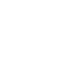
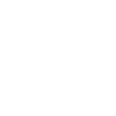
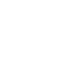
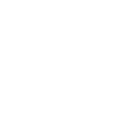
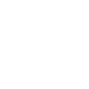
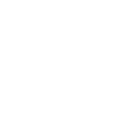

ABOUT ME
+46 70-049 57 90

Hey, I’m Martin. I’m a Systems Designer currently studying at Futuregames Stockholm.
I’ve always loved games as a medium and I genuinely believe that they can be used as a vehicle to deliver amazing one of a kind experiences! I started out wanting to make games in my childhood with gamemaker 8.1 back in 2013, and later tried out unity before taking the step to one day achieve a professional career within game development when I began my game design studies at Nacka Strands Gymnasium (Highschool), and later Futuregames.
Deep down what I value most is creating things that resonate with people, something that adds value to the world in the form of artistic expression through games.
As for why I’m a system designer, I just love creatively solving problems! Problem solving is a big drive for me to learn new things, and overcoming challenges and obstacles is an amazing feeling! Nothing beats the feeling of taking on a new weekend project regarding something I’m not very knowledgeable and coming out with a set of new skills and a fresh perspective on other topics I’m already good at.
Outside of game dev I sometimes mess around with various pet projects in different programming languages, and I also have a keen interest in the inner workings of LLMs and other forms of artificial intelligence and machine learning. I also have quite a few hobbies and I constantly try new things out such as: Playing guitar, Skating, Gardening, creating music in FL studio, Drawing, Embroidery, Photography and more!
 





 




